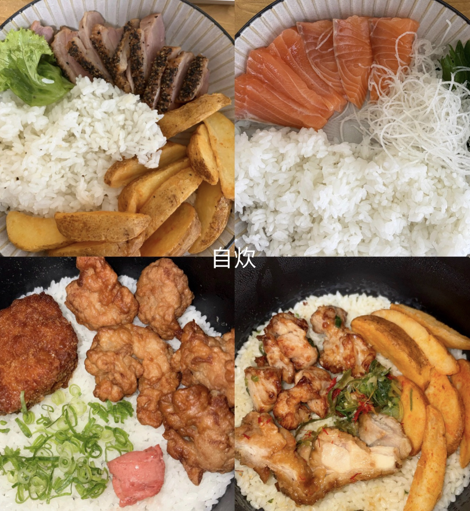

My Impressions about Japan and UEC
Studying as an exchange student at the University of Electro-Communications (UEC) has been an absolutely wonderful and eye-opening experience for me. Since I arrived here in Japan, one of the most rewarding parts of my daily life has been meeting so many incredible people from all different parts of the world. Everyone I have encountered, including my international classmates, Japanese students, and the university staff, has been exceptionally kind, warm-hearted, and always ready to help me adjust to this brand-new environment. We often spend time together exchanging stories about our home countries, which has taught me so much about diverse world cultures.
In addition to my academic studies, Japan has offered me so many unforgettable seasonal memories. When I first arrived in spring, I was completely amazed by the breathtaking beauty of the full-blooming cherry blossoms, or sakura, all around Tokyo. Walking under the pink petals was like being in a movie. Later on, I also had the amazing opportunity to experience traditional Japanese summer festivals and watch the spectacular fireworks lighting up the night sky. The energy, local food stalls, and stunning firework displays truly made me fall in love with the vibrant culture here.
Another big part of my independence and life in Japan has been learning how to manage my own meals. To explore Japanese ingredients and save some budget, I have started cooking for myself quite often in my dormitory. It is always a fun and creative process to try out new recipes, make delicious dishes, and sometimes even share my homemade Taiwanese meals with my international friends. Living here has not only broadened my global knowledge in engineering but has also given me practical life skills that I will cherish forever.
